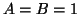
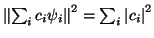
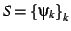
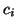

Une base de Riesz
 est une famille
de fonctions dans un espace de Hilbert telle que

with
 peu importe les  choisis. Les ondelettes
orthogonales et biorthogonales forment des bases de Riez. La grande
majorité des ondelettes sont dans cette catégorie. Dans le cas d'une
base orthonormale, nous avons  et
.
et
.